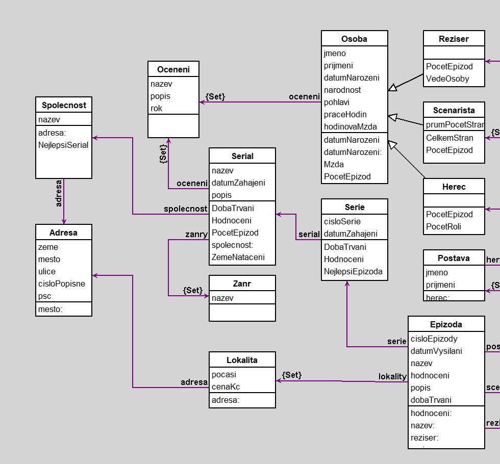

Databaze serialu
author(s): David Pocar
Workspace
"Pocet osob, ktere se vyskytnuly ve vice jak dvou epizodach v libovolnem serialu"
OsobaSet select: [:os | os PocetEpizod > 2].
"Nazev nejlepsiho serialu kazde spolecnosti"
SpolecnostSet collect: [ :sp | sp NejlepsiSerial nazev ].
"Vsechny zeme, kde byly vsechny serialy nataceny"
(SerialSet collect: [ :s | s ZemeNataceni ]) flatten asSet.
"Vsechny zeme, kde byl serial dane spolecnosti natacen"
((SerialSet select: [ :s | s spolecnost nazev = 'Qwert']) collect: [ :s | s ZemeNataceni ]) flatten asSet.
"Epizody s hodnoceni od 2 do 8 serazeno od nejhorsiho"
(EpizodaSet select: [ :e | e hodnoceni between: 2 and: 8]) asSet sortBy: [ :f | f hodnoceni].
"Postavy, ktere hrala herecka jmenem 'Hitomi'"
(PostavaSet select: [:p | p herec jmeno = 'Hitomi']).
"Prvni epizody první serie"
EpizodaSet select: [:e | e serie cisloSerie = 1 & e cisloEpizody = 1].
"Serialy s zanrem komedie "
SerialSet select: [ :s | (s zanry collect: [ :z | z nazev ]) includes: 'Komedie'].
"Nejdrazsi lokalita v CR"
(LokalitaSet select: [:l | l adresa zeme = 'Czech Republic'])
inject: nil into: [:a :b | (a isNil ifTrue: [0] ifFalse: [a cenaKc]) < b cenaKc ifFalse: [a] ifTrue: [b]].
"Cena nejdrazsi lokality v CR"
((LokalitaSet select: [:l | l adresa zeme = 'Czech Republic']) collect: [:l | l cenaKc]) max
Workspace Objects
-
AdresaSet :Set
-
EpizodaSet :Set
-
HerecSet :Set
-
LokalitaSet :Set
-
OceneniSet :Set
-
OsobaSet :Set
-
PostavaSet :Set
-
ReziserSet :Set
-
ScenaristaSet :Set
-
SerialSet :Set
-
SerieSet :Set
-
SpolecnostSet :Set
-
ZanrSet :Set
Script
"Herci"
herec1 := Herec new.
herec1
jmeno: 'Felix';
prijmeni: 'Bradford';
datumNarozeni: '02-21-1951' asDate;
narodnost: 'Saudi Arabia';
praceHodin: 9;
hodinovaMzda: 336;
pohlavi: 'muz'.
herec2 := Herec new.
herec2
jmeno: 'Bret';
prijmeni: 'Mcintosh';
datumNarozeni: '07-19-1943' asDate;
narodnost: 'Nigeria';
praceHodin: 13;
hodinovaMzda: 332.
herec3 := Herec new.
herec3
jmeno: 'Hitomi';
prijmeni: 'Perez';
datumNarozeni: '08-06-1994' asDate;
narodnost: 'Croatia';
praceHodin: 9;
hodinovaMzda: 22.
herec4 := Herec new.
herec4
jmeno: 'Richard';
prijmeni: 'Rutledge';
datumNarozeni: '09-12-1978' asDate;
narodnost: 'Iran';
praceHodin: 2;
hodinovaMzda: 329.
herec5 := Herec new.
herec5
jmeno: 'Ase';
prijmeni: 'Kor';
datumNarozeni: '11-11-1955' asDate;
narodnost: 'Sri Lanka';
praceHodin: 15;
hodinovaMzda: 116.
herec6 := Herec new.
herec6
jmeno: 'Kirk';
prijmeni: 'Whitaker';
datumNarozeni: '11-23-1965' asDate;
narodnost: 'Sri Lanka';
praceHodin: 1;
hodinovaMzda: 305.
herec7 := Herec new.
herec7
jmeno: 'Felix';
prijmeni: 'Bradford';
datumNarozeni: '02-21-1951' asDate;
narodnost: 'Saudi Arabia';
praceHodin: 7;
hodinovaMzda: 276.
herec8 := Herec new.
herec8
jmeno: 'Ernesto';
prijmeni: 'Brooks';
datumNarozeni: '02-21-1951' asDate;
narodnost: 'Saint Pierre & Miquelon';
praceHodin: 5;
hodinovaMzda: 56.
herec9 := Herec new.
herec9
jmeno: 'Asanagi';
prijmeni: 'Heh';
datumNarozeni: '08-06-1984' asDate;
narodnost: 'Japan';
praceHodin: 12;
hodinovaMzda: 157.
"Postavy"
postava1 := Postava new.
postava1
jmeno: 'Lili';
prijmeni: 'Bradley'.
postava2 := Postava new.
postava2
jmeno: 'Sachiko';
prijmeni: 'Long'.
postava3 := Postava new.
postava3
jmeno: 'Irene';
prijmeni: 'Russo'.
postava4 := Postava new.
postava4
jmeno: 'Mieko';
prijmeni: 'Ferguson'.
postava5 := Postava new.
postava5
jmeno: 'Arlene';
prijmeni: 'Kirby'.
postava6 := Postava new.
postava6
jmeno: 'Noel';
prijmeni: 'Perry'.
postava7 := Postava new.
postava7
jmeno: 'Leslie';
prijmeni: 'Herman'.
postava8 := Postava new.
postava8
jmeno: 'Danielle';
prijmeni: 'Lester'.
postava9 := Postava new.
postava9
jmeno: 'Asu';
prijmeni: 'Nagi'.
"Scenariste"
scenarista1 := Scenarista new.
scenarista1
jmeno: 'Iris';
prijmeni: 'Hooper';
datumNarozeni: '05-17-1959' asDate;
narodnost: 'Morocco';
prumPocetStran: 27;
praceHodin: 9;
hodinovaMzda: 336.
scenarista2 := Scenarista new.
scenarista2
jmeno: 'Richard';
prijmeni: 'Rutledge';
datumNarozeni: '09-12-1978' asDate;
narodnost: 'Iran';
prumPocetStran: 15;
praceHodin: 9;
hodinovaMzda: 336.
scenarista3 := Scenarista new.
scenarista3
jmeno: 'Isaac';
prijmeni: 'Robinson';
datumNarozeni: '09-26-1960' asDate;
narodnost: 'Turks & Caicos';
prumPocetStran: 13;
praceHodin: 9;
hodinovaMzda: 336.
scenarista4 := Scenarista new.
scenarista4
jmeno: 'Felix';
prijmeni: 'Bradford';
datumNarozeni: '02-21-1951' asDate;
narodnost: 'Saudi Arabia';
prumPocetStran: 36;
praceHodin: 9;
hodinovaMzda: 336.
scenarista5 := Scenarista new.
scenarista5
jmeno: 'Sandy';
prijmeni: 'Vaughn';
datumNarozeni: '11-12-1981' asDate;
narodnost: 'Iraq';
prumPocetStran: 42;
praceHodin: 9;
hodinovaMzda: 336.
scenarista6 := Scenarista new.
scenarista6
jmeno: 'Sally';
prijmeni: 'Knowles';
datumNarozeni: '06-26-1979' asDate;
narodnost: 'Uganda';
prumPocetStran: 26;
praceHodin: 9;
hodinovaMzda: 336.
"Reziseri"
reziser1 := Reziser new.
reziser1
jmeno: 'Reina';
prijmeni: 'Spencer';
datumNarozeni: '10-26-1991' asDate;
narodnost: 'Turks & Caicos';
praceHodin: 9;
hodinovaMzda: 336.
reziser2 := Reziser new.
reziser2
jmeno: 'Sere';
prijmeni: 'Aqu';
datumNarozeni: '08-06-1974' asDate;
narodnost: 'Croatia';
praceHodin: 9;
hodinovaMzda: 336.
reziser3 := Reziser new.
reziser3
jmeno: 'Eren';
prijmeni: 'Jaeger';
datumNarozeni: '01-21-1971' asDate;
narodnost: 'Saint Pierre & Miquelon';
praceHodin: 9;
hodinovaMzda: 336.
"Oceneni"
oceneni1 := Oceneni new.
oceneni1
nazev: 'Prvni oceneni';
popis: 'Popis oceneni';
rok: 2010.
oceneni2 := Oceneni new.
oceneni2
nazev: 'Druhe oceneni';
popis: 'Popis oceneni';
rok: 2011.
"Spolecnost"
spolecnost1 := Spolecnost new.
spolecnost1
nazev: 'HPO'.
spolecnost2 := Spolecnost new.
spolecnost2
nazev: 'Qwert'.
"Serialy"
serial1 := Serial new.
serial1
nazev: 'The X';
datumZahajeni: '1-1-2000' asDate;
popis: 'Serial je o necem.'.
serial2 := Serial new.
serial2
nazev: 'The Y';
datumZahajeni: '1-1-2001' asDate;
popis: 'Serial je o necem jinem nez jiny serial.'.
serial3 := Serial new.
serial3
nazev: 'The ABC';
datumZahajeni: '1-1-2020' asDate;
popis: 'Novejsi serial o necem jinem nez jine serialy.'.
"Zanry"
zanr1 := Zanr new.
zanr1
nazev: 'Drama'.
zanr2 := Zanr new.
zanr2
nazev: 'Komedie'.
zanr3 := Zanr new.
zanr3
nazev: 'Western'.
zanr4 := Zanr new.
zanr4
nazev: 'Historický'.
zanr5 := Zanr new.
zanr5
nazev: 'Pohádka'.
zanr6 := Zanr new.
zanr6
nazev: 'Válečný'.
"Serie"
serie11 := Serie new.
serie11
cisloSerie: 1;
datumZahajeni: '1-1-2018' asDate.
serie12 := Serie new.
serie12
cisloSerie: 2;
datumZahajeni: '1-1-2019' asDate.
serie13 := Serie new.
serie13
cisloSerie: 3;
datumZahajeni: '1-1-2020' asDate.
serie21 := Serie new.
serie21
cisloSerie: 1;
datumZahajeni: '1-1-2018' asDate.
serie22 := Serie new.
serie22
cisloSerie: 2;
datumZahajeni: '1-1-2019' asDate.
serie23 := Serie new.
serie23
cisloSerie: 3;
datumZahajeni: '1-1-2020' asDate.
serie31 := Serie new.
serie31
cisloSerie: 1;
datumZahajeni: '1-1-2018' asDate.
serie32 := Serie new.
serie32
cisloSerie: 2;
datumZahajeni: '1-1-2019' asDate.
serie33 := Serie new.
serie33
cisloSerie: 3;
datumZahajeni: '1-1-2020' asDate.
"Epizody"
epizoda11 := Epizoda new.
epizoda11
cisloEpizody: 1;
datumVysilani: '1-1-2011' asDate;
nazev: 'A vraci uder';
hodnoceni: 10;
popis: '';
dobaTrvani: 53.
epizoda12 := Epizoda new.
epizoda12
cisloEpizody: 2;
datumVysilani: '1-2-2011' asDate;
nazev: 'B vraci uder';
hodnoceni: 9;
popis: '';
dobaTrvani: 50.
epizoda13 := Epizoda new.
epizoda13
cisloEpizody: 3;
datumVysilani: '1-3-2011' asDate;
nazev: 'C vraci uder';
hodnoceni: 8;
popis: '';
dobaTrvani: 51.
epizoda21 := Epizoda new.
epizoda21
cisloEpizody: 1;
datumVysilani: '1-1-2011' asDate;
nazev: 'Spatna epizoda';
hodnoceni: 2;
popis: '';
dobaTrvani: 14.
epizoda22 := Epizoda new.
epizoda22
cisloEpizody: 2;
datumVysilani: '1-2-2011' asDate;
nazev: 'Nic moc epizoda';
hodnoceni: 3;
popis: '';
dobaTrvani: 15.
epizoda23 := Epizoda new.
epizoda23
cisloEpizody: 3;
datumVysilani: '1-3-2011' asDate;
nazev: 'Nezajem epizoda';
hodnoceni: 1;
popis: '';
dobaTrvani: 16.
epizoda31 := Epizoda new.
epizoda31
cisloEpizody: 1;
datumVysilani: '1-1-2011' asDate;
nazev: 'Nejlepsi epizoda vsech epizod';
hodnoceni: 10;
popis: '';
dobaTrvani: 22.
epizoda32 := Epizoda new.
epizoda32
cisloEpizody: 2;
datumVysilani: '1-2-2011' asDate;
nazev: 'Epizoda z kapsy';
hodnoceni: 3;
popis: '';
dobaTrvani: 20.
epizoda33 := Epizoda new.
epizoda33
cisloEpizody: 3;
datumVysilani: '1-3-2011' asDate;
nazev: 'Mozna ok epizoda';
hodnoceni: 5;
popis: '';
dobaTrvani: 21.
"Lokality"
lokalita1 := Lokalita new.
lokalita1
pocasi: 'Casto oblacno';
cenaKc: 420691337.
lokalita2 := Lokalita new.
lokalita2
pocasi: 'Spise polojasno';
cenaKc: 691337.
lokalita3 := Lokalita new.
lokalita3
pocasi: 'Pouze dest';
cenaKc: 1337.
"Adresy"
adresa1 := Adresa new.
adresa1
zeme: 'Ireland';
mesto: 'Cork';
ulice: 'Bandon Rd';
cisloPopisne: '179';
psc: 81370.
adresa2 := Adresa new.
adresa2
zeme: 'Czech Republic';
mesto: 'Praha';
ulice: 'Prokopakova';
cisloPopisne: '12';
psc: 13000.
adresa3 := Adresa new.
adresa3
zeme: 'Czech Republic';
mesto: 'Praha';
ulice: 'Barandovská';
cisloPopisne: '13';
psc: 18000.
"Osoba - oceneni"
herec1 oceneni add: oceneni1.
reziser1 oceneni add: oceneni1.
"Lokalita - adresa"
lokalita1 adresa: adresa1.
lokalita2 adresa: adresa2.
lokalita3 adresa: adresa3.
"Spolecnost - adresa"
spolecnost1 adresa: adresa1.
spolecnost2 adresa: adresa2.
"Postavy - herec"
postava1 herec: herec1.
postava2 herec: herec1.
postava3 herec: herec3.
postava4 herec: herec4.
postava5 herec: herec5.
postava6 herec: herec6.
postava7 herec: herec7.
postava8 herec: herec1.
postava9 herec: herec1.
"Serial - spolecnost, zanr, oceneni"
serial1 spolecnost: spolecnost1.
serial2 spolecnost: spolecnost2.
serial3 spolecnost: spolecnost2.
serial1 zanry add: zanr1; add: zanr2; add: zanr3.
serial2 zanry add: zanr3; add: zanr4.
serial3 zanry add: zanr4; add: zanr5; add: zanr6.
serial1 oceneni add: oceneni2.
"Serie - serial"
serie11 serial: serial1.
serie21 serial: serial2.
serie31 serial: serial3.
"Epizody - serie, reziser, postavy, scenariste"
epizoda11 reziser: reziser1; serie: serie11.
epizoda12 reziser: reziser1; serie: serie11.
epizoda13 reziser: reziser2; serie: serie11.
epizoda21 reziser: reziser2; serie: serie21.
epizoda22 reziser: reziser2; serie: serie21.
epizoda23 reziser: reziser2; serie: serie21.
epizoda31 reziser: reziser3; serie: serie31.
epizoda32 reziser: reziser3; serie: serie31.
epizoda33 reziser: reziser3; serie: serie31.
epizoda11 postavy add: postava1.
epizoda12 postavy add: postava1; add: postava2.
epizoda13 postavy add: postava4; add: postava3.
epizoda21 postavy add: postava4.
epizoda22 postavy add: postava4; add: postava5.
epizoda23 postavy add: postava4; add: postava5; add: postava7.
epizoda31 postavy add: postava9.
epizoda32 postavy add: postava9; add: postava8.
epizoda33 postavy add: postava9; add: postava8; add: postava7.
epizoda11 scenariste add: scenarista1.
epizoda12 scenariste add: scenarista1; add: scenarista3.
epizoda13 scenariste add: scenarista2.
epizoda21 scenariste add: scenarista3.
epizoda22 scenariste add: scenarista3; add: scenarista4.
epizoda23 scenariste add: scenarista4.
epizoda31 scenariste add: scenarista5.
epizoda32 scenariste add: scenarista5; add: scenarista6.
epizoda33 scenariste add: scenarista6.
epizoda11 lokality add: lokalita1.
epizoda12 lokality add: lokalita1; add: lokalita2.
epizoda13 lokality add: lokalita3.
epizoda21 lokality add: lokalita1.
epizoda22 lokality add: lokalita2; add: lokalita3.
epizoda23 lokality add: lokalita3.
epizoda31 lokality add: lokalita2.
epizoda32 lokality add: lokalita2; add: lokalita3.
epizoda33 lokality add: lokalita3.
"Globalni sety"
OsobaSet := Set new.
HerecSet := Set new.
PostavaSet := Set new.
ScenaristaSet := Set new.
ReziserSet := Set new.
OceneniSet := Set new.
SpolecnostSet := Set new.
SerialSet := Set new.
ZanrSet := Set new.
SerieSet := Set new.
EpizodaSet := Set new.
LokalitaSet := Set new.
AdresaSet := Set new.
OsobaSet
add: herec1; add: herec2; add: herec3; add: herec4; add: herec5; add: herec6; add: herec7; add: herec8; add: herec9;
add: scenarista1; add: scenarista2; add: scenarista3;
add: reziser1; add: reziser2; add: reziser3.
HerecSet add: herec1; add: herec2; add: herec3; add: herec4; add: herec5; add: herec6; add: herec7; add: herec8; add: herec9.
PostavaSet add: postava1; add: postava2; add: postava3; add: postava4; add: postava5; add: postava6; add: postava7; add: postava8; add: postava9.
ScenaristaSet add: scenarista1; add: scenarista2; add: scenarista3.
ReziserSet add: reziser1; add: reziser2; add: reziser3.
SpolecnostSet add: spolecnost1; add: spolecnost2.
OceneniSet add: oceneni1; add: oceneni2.
SerialSet add: serial1; add: serial2; add: serial3.
ZanrSet add: zanr1; add: zanr2; add: zanr3; add: zanr4; add: zanr5; add: zanr6.
SerieSet add: serie11; add: serie12; add: serie13; add: serie21; add: serie22; add: serie23; add: serie31; add: serie32; add: serie33.
EpizodaSet add: epizoda11; add: epizoda12; add: epizoda13; add: epizoda21; add: epizoda22; add: epizoda23; add: epizoda31; add: epizoda32; add: epizoda33.
LokalitaSet add: lokalita1; add: lokalita2; add: lokalita3.
AdresaSet add: adresa1; add: adresa2; add: adresa3.
Diagram

Classes
Oceneni
|
instance variables
nazev :String
popis :String
rok :Number
|
methods
initialize
nazev
nazev:
popis
popis:
rok
rok:
|
|
|
code of non-accessing methods:
Zanr
|
instance variables
nazev :String
|
methods
initialize
nazev
nazev:
|
|
|
code of non-accessing methods:
Adresa
|
instance variables
cisloPopisne :String
mesto :String
psc :Number
ulice :String
zeme :String
|
methods
cisloPopisne
cisloPopisne:
initialize
mesto
mesto:
psc
psc:
ulice
ulice:
zeme
zeme:
|
|
|
code of non-accessing methods:
Lokalita
|
instance variables
adresa :Object
cenaKc :Number
pocasi :String
|
methods
adresa
adresa:
cenaKc
cenaKc:
initialize
pocasi
pocasi:
|
|
|
code of non-accessing methods:
-
adresa: anObject
"generated by Daskalos"
| tmpAdresa |
tmpAdresa := self checkValue: anObject forVariable: #adresa.
(tmpAdresa isMemberOf: Adresa)
ifFalse:
[self
error: 'Zprava ''Lokalita adresa:'' prijima pouze instanci tridy ''Adresa'''].
adresa := tmpAdresa
-
initialize
"generated by Daskalos"
super initialize.
pocasi := nil.
cenaKc := nil.
adresa := nil.
Serie
|
instance variables
cisloSerie :Number
datumZahajeni :Date
serial :Object
|
methods
cisloSerie
cisloSerie:
datumZahajeni
datumZahajeni:
DobaTrvani
Hodnoceni
initialize
NejlepsiEpizoda
serial
serial:
|
|
|
code of non-accessing methods:
-
DobaTrvani
"Doba trvani v minutach vsech epizod dane serie"
^((Epizoda allInstances select: [:ep | ep serie = self])
collect: [:e | e dobaTrvani]) sum
-
Hodnoceni
"Prumerne hodnoceni vsech epizod z dane serie"
^((Epizoda allInstances select: [:ep | ep serie = self])
collect: [:e | e hodnoceni]) avg
-
initialize
"generated by Daskalos"
super initialize.
cisloSerie := nil.
datumZahajeni := nil.
serial := nil.
-
NejlepsiEpizoda
"Nejlepsi epizoda cele serie"
| epizody |
epizody := Epizoda allInstances select: [:ep | ep serie = self].
^epizody inject: nil
into:
[:a :b |
(a isNil ifTrue: [0] ifFalse: [a hodnoceni]) < b hodnoceni
ifFalse: [a]
ifTrue: [b]]
-
serial: anObject
"generated by Daskalos"
| tmpSerial |
tmpSerial := self checkValue: anObject forVariable: #serial.
(tmpSerial isMemberOf: Serial)
ifFalse:
[self
error: 'Zprava ''Serie serial:'' prijima pouze instanci tridy ''Serial'''].
serial := tmpSerial
Serial
|
instance variables
datumZahajeni :Date
nazev :String
oceneni :Set
popis :String
spolecnost :Object
zanry :Set
|
methods
datumZahajeni
datumZahajeni:
DobaTrvani
Hodnoceni
initialize
nazev
nazev:
oceneni
PocetEpizod
popis
popis:
spolecnost
spolecnost:
zanry
ZemeNataceni
|
|
|
code of non-accessing methods:
-
DobaTrvani
"Doba trvani v minutach vsech epizod vsech serii daneho serialu"
^((Epizoda allInstances select: [:ep | ep serie serial = self])
collect: [:e | e dobaTrvani]) sum
-
Hodnoceni
"Prumerne hodnoceni vsech epizod ze vsech serii daneho serialu"
^((Epizoda allInstances select: [:ep | ep serie serial = self])
collect: [:e | e hodnoceni]) avg
-
initialize
"generated by Daskalos"
super initialize.
nazev := nil.
datumZahajeni := nil.
popis := nil.
oceneni := Set new.
zanry := Set new.
spolecnost := nil.
-
PocetEpizod
"Pocet epizod ze vsech serii daneho serialu"
^(Epizoda allInstances select: [:ep | ep serie serial = self]) size
-
spolecnost: anObject
"generated by Daskalos"
| tmpSpolecnost |
tmpSpolecnost := self checkValue: anObject forVariable: #spolecnost.
(tmpSpolecnost isMemberOf: Spolecnost)
ifFalse:
[self
error: 'Zprava ''Serial spolecnost:'' prijima pouze instanci tridy ''Spolecnost'''].
spolecnost := tmpSpolecnost
-
ZemeNataceni
"Vsechny zeme nataceni daneho serialu"
^(((Epizoda allInstances select: [:ep | ep serie serial = self])
collect: [:e | e lokality]) flatten
collect: [:l | l adresa zeme]) asSet
Postava
|
instance variables
herec :Object
jmeno :String
prijmeni :String
|
methods
herec
herec:
initialize
jmeno
jmeno:
prijmeni
prijmeni:
|
|
|
code of non-accessing methods:
-
herec: anObject
"generated by Daskalos"
| tmpHerec |
tmpHerec := self checkValue: anObject forVariable: #herec.
(tmpHerec isMemberOf: Herec)
ifFalse:
[self
error: 'Zprava ''Postava herec:'' prijima pouze instanci tridy ''Herec'''].
herec := tmpHerec
-
initialize
"generated by Daskalos"
super initialize.
jmeno := nil.
prijmeni := nil.
herec := nil.
Epizoda
|
instance variables
cisloEpizody :Number
datumVysilani :Date
dobaTrvani :Number
hodnoceni :Number
lokality :Set
nazev :String
popis :String
postavy :Set
reziser :Object
scenariste :Set
serie :Object
|
methods
cisloEpizody
cisloEpizody:
datumVysilani
datumVysilani:
dobaTrvani
dobaTrvani:
hodnoceni
hodnoceni:
initialize
lokality
nazev
nazev:
popis
popis:
postavy
reziser
reziser:
scenariste
serie
serie:
UmisteniVZebricku
|
|
|
code of non-accessing methods:
-
hodnoceni: anObject
"generated by Daskalos"
| tmpHodnoceni |
tmpHodnoceni := self checkValue: anObject forVariable: #hodnoceni.
(tmpHodnoceni > 10 or: [tmpHodnoceni < 0])
ifTrue: [self error: 'Hodnoceni musi byt cislo od 0 do 10'].
hodnoceni := tmpHodnoceni
-
initialize
"generated by Daskalos"
super initialize.
cisloEpizody := nil.
datumVysilani := nil.
nazev := nil.
hodnoceni := nil.
popis := nil.
dobaTrvani := nil.
scenariste := Set new.
lokality := Set new.
reziser := nil.
serie := nil.
postavy := Set new.
-
nazev: anObject
"generated by Daskalos"
| tmpNazev |
tmpNazev := self checkValue: anObject forVariable: #nazev.
tmpNazev size > 100
ifTrue: [self error: 'Nazev epizody muze mit maximalne 100 znaku'].
nazev := tmpNazev
-
reziser: anObject
"generated by Daskalos"
| tmpReziser |
tmpReziser := self checkValue: anObject forVariable: #reziser.
(tmpReziser isMemberOf: Reziser)
ifFalse:
[self
error: 'Zprava ''Epizoda reziser:'' prijima pouze instanci tridy ''Reziser'''].
reziser := tmpReziser
-
serie: anObject
"generated by Daskalos"
| tmpSerie |
tmpSerie := self checkValue: anObject forVariable: #serie.
(tmpSerie isMemberOf: Serie)
ifFalse:
[self
error: 'Zprava ''Epizoda serie:'' prijima pouze instanci tridy ''Serie'''].
serie := tmpSerie
-
UmisteniVZebricku
"Umisteni v zebricku serazenych epizod"
^((Epizoda allInstances collect: [:a | a hodnoceni]) asSet
sortBy: [:a | a hodnoceni]) indexOf: hodnoceni
Osoba
|
instance variables
datumNarozeni :Date
hodinovaMzda :Number
jmeno :String
narodnost :String
oceneni :Set
pohlavi :String
praceHodin :Number
prijmeni :String
|
methods
datumNarozeni
datumNarozeni:
hodinovaMzda
hodinovaMzda:
initialize
jmeno
jmeno:
Mzda
narodnost
narodnost:
oceneni
PocetEpizod
pohlavi
pohlavi:
praceHodin
praceHodin:
prijmeni
prijmeni:
|
|
|
code of non-accessing methods:
-
datumNarozeni
"generated by Daskalos"
^datumNarozeni printFormat: #(1 2 3 $. 1 1)
-
datumNarozeni: anObject
"generated by Daskalos"
| tmpDatumNarozeni |
tmpDatumNarozeni := self checkValue: anObject forVariable: #datumNarozeni.
tmpDatumNarozeni < (Date readFromString: '1-1-1900')
ifTrue: [self error: 'Minimalni povoleny datum narozeni je 1-1-1900'].
datumNarozeni := tmpDatumNarozeni
-
initialize
"generated by Daskalos"
super initialize.
jmeno := nil.
prijmeni := nil.
datumNarozeni := nil.
narodnost := nil.
pohlavi := nil.
oceneni := Set new.
praceHodin := nil.
hodinovaMzda := nil.
-
Mzda
^praceHodin * hodinovaMzda
-
PocetEpizod
^0
-
pohlavi
"generated by Daskalos"
pohlavi isNil ifTrue: [^'<neuvedeno>'] ifFalse: [^pohlavi]
Spolecnost
|
instance variables
adresa :Object
nazev :String
|
methods
adresa
adresa:
initialize
nazev
nazev:
NejlepsiSerial
|
|
|
code of non-accessing methods:
-
adresa: anObject
"generated by Daskalos"
| tmpAdresa |
tmpAdresa := self checkValue: anObject forVariable: #adresa.
(tmpAdresa isMemberOf: Adresa)
ifFalse:
[self
error: 'Zprava ''Spolecnost adresa:'' prijima pouze instanci tridy ''Adresa'''].
adresa := tmpAdresa
-
initialize
"generated by Daskalos"
super initialize.
nazev := nil.
adresa := nil.
-
NejlepsiSerial
"Nejlepsi serial spolecnosti podle prumerneho hodnoceni serialu"
| serialy |
serialy := Serial allInstances select: [:se | se spolecnost = self].
^serialy inject: nil
into:
[:a :b |
(a isNil ifTrue: [0] ifFalse: [a Hodnoceni]) < b Hodnoceni
ifFalse: [a]
ifTrue: [b]]
Herec
|
instance variables
|
methods
initialize
PocetEpizod
PocetRoli
|
|
|
code of non-accessing methods:
-
initialize
"generated by Daskalos"
super initialize.
-
PocetEpizod
"Pocet epizod, ve kterych herec hral bez ohledu na pocet postav"
^(Epizoda allInstances
select: [:ep | (ep postavy collect: [:p | p herec]) includes: self]) size
-
PocetRoli
"Pocet roli, ktere herec hral"
^(Postava allInstances select: [:po | po herec = self]) size
Scenarista
|
instance variables
prumPocetStran :Number
|
methods
CelkemStran
initialize
PocetEpizod
prumPocetStran
prumPocetStran:
|
|
|
code of non-accessing methods:
-
CelkemStran
"Celkem stran za vsechny epizody"
^(Epizoda allInstances select: [:ep | ep scenariste includes: self]) size
* prumPocetStran
-
initialize
"generated by Daskalos"
super initialize.
prumPocetStran := nil.
-
PocetEpizod
"Pocet epizod, na kterych se scenarista podilel"
^(Epizoda allInstances select: [:ep | ep scenariste includes: self]) size
Reziser
|
instance variables
|
methods
initialize
PocetEpizod
VedeOsoby
|
|
|
code of non-accessing methods:
-
initialize
"generated by Daskalos"
super initialize.
-
PocetEpizod
"Pocet epizod, ktere dany reziser reziroval"
^(Epizoda allInstances select: [:ep | ep reziser = self]) size
-
VedeOsoby
"Vedene osoby reziserem - scenariste a herci"
| epizody vedeneOsoby |
epizody := Epizoda allInstances select: [:ep | ep reziser = self].
vedeneOsoby := (epizody collect: [:es | es scenariste]) flatten asSet.
((epizody collect: [:es | es postavy]) flatten collect: [:p | p herec])
asSet do: [:h | vedeneOsoby add: h].
^vedeneOsoby
Links
Data file and
class source.
Generated by Daskalos - Object Modeling Tutor (C) 2006 V. Merunka
April 25, 2020